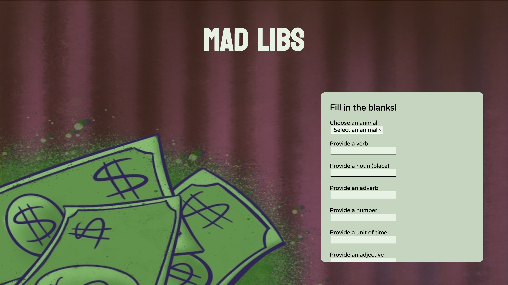
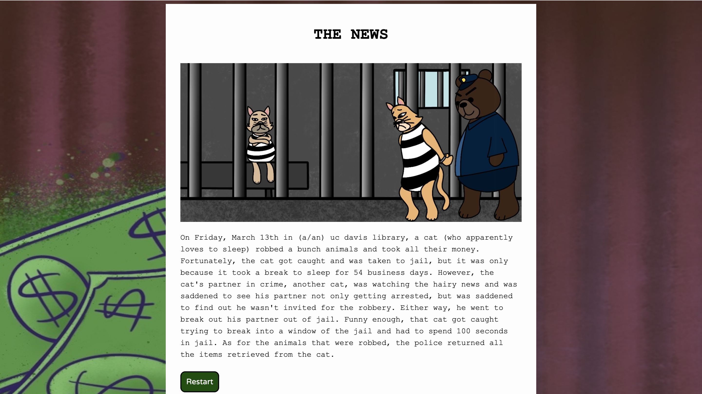

Mad Lib Project Overview
In this report, I observed two users testing my Mad Libs Prototype. I just watched and recorded what I noticed as they were completing the Mad Libs, taking note of any confusion and hesitancy as well as non hesitancy. Below show two screenshots of the prototype in which the users tested.
 Testers
The two testers of my Mad Lib prototype were one man and one woman, both in their twenties, residing in California, and are familiar with doing Mad Libs. They fit my target audience as they are familiar with Mad Libs, therefore, they should know how they work and perform once submitted.
Assigned Task
The testers were tasked with filling out the Mad Lib form and generating their own story. They were also tasked to restart and fill out the form two more times, choosing a different animal each time.
Results
After observing the users test the Mad Lib, I noticed a few things that stood out to me. One thing I noticed was when the male was first filling out the Mad Libs form, he was hesitant when filling out the verb blank and spoke to himself wondering if the verb should phrased like "to sleep" or just "sleep." Another time I noticed hesitancy and error was when he filled out the "Provide a noun (place)" as he first put in a noun that wasn't a place. As for the female, I did not notice any hesitancy as she filled out the Mad Libs form. However, I noticed when she was reading out her story, the articles before the place she wrote did not make sense because it said "in a/an UC Davis Library" instead of "the" which is what she said outloud she had intended to say, "the UC Davis Library." Other than that, both users were quick to find out the Mad Libs form was a scrolling form and were non hesitant when utilizing the "Generate Mad Libs" and "Restart Button."
How to Improve
After reflecting on these results, I plan on making a few changes. I plan on changing the "Provide a noun (place)" into something more clear such as "Provide a location." I also plan to reword the story and consider which blanks need articles. Furthermore, I plan to add the article "the" for the location blank as it was needed during the testing.